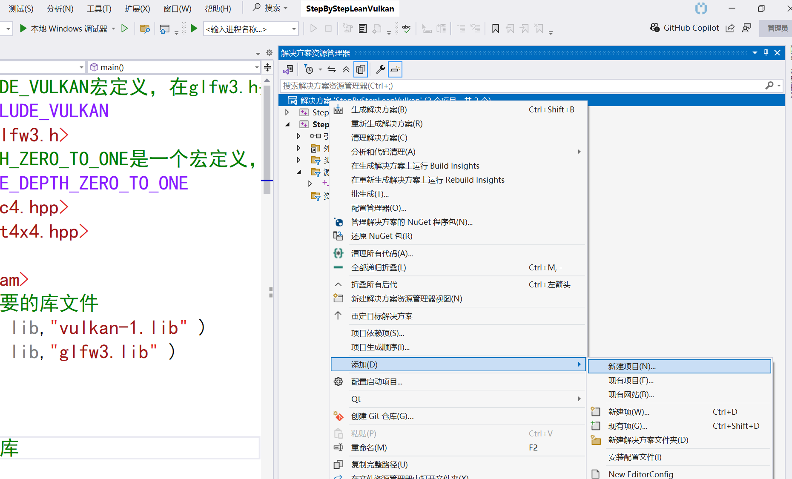
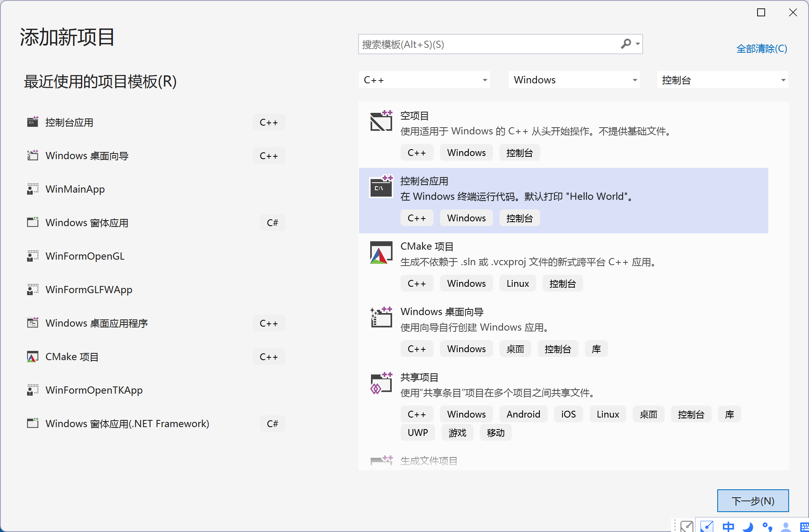
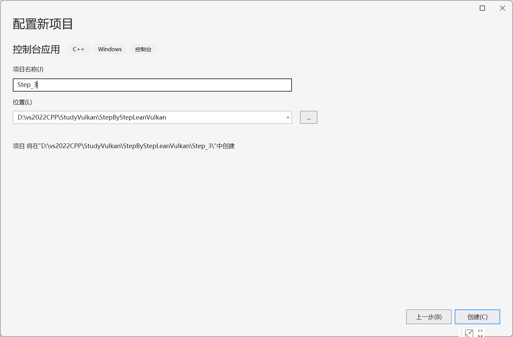
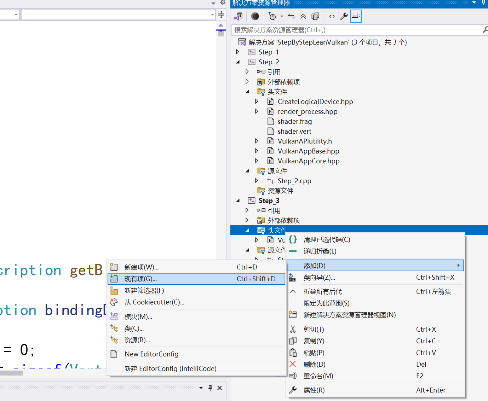

Step-by-Step学习Vulkan编程入门(创建交换链对象)
作者：刘文庆
为使得应用程序结构清晰，我们将创建Vulkan必要的组件对象分成两部分：一部分在VulkanAppCore类中进行创建，另一部分在VulkanAppBase类进行创建，
重新构建Vulkan工程
添加Step-3应用程序工程，
① 在“解决方案资源管理器”上的“解决方案ˊStepByStepLeanVulkanˊ”上点击鼠标右键，选择添加---新建项目菜单：

弹出如下对话框：

点击“下一步”,出现如下对话框：

在项目名称中输入Step_3后，点击“创建按钮”，完成应用程序创建。
② 按照Step_1中 ② 配置应用程序寻在Vulkan头文件和库文件路径设置，确保程序能够引用头文件和库文件，这里就不再详细描述。
修改应用程序基础框架
① 将VulkanAppCore.hpp文件拷贝到Step_3工程目录中并添加到工程的include应用列表
在“解决方案资源管理器”视图中Step_3工程下的“头文件”上面点击鼠标右键：

② 新建VulkanAppBase.hpp头文件： 参见新建VulkanAppCore.hpp文件的操作步骤
③ 编辑VulkanAppBase.hpp文件
x1#pragma once2#include "VulkanAppCore.hpp"3#include <glm/glm.hpp>5#include <array>6class VulkanAppBase : public VulkanAppCore8{9protected:10public:12void run()13{14initWindow();15initVulkan();16mainLoop();17cleanup();18}19void initVulkan()20{21VulkanAppCore::initVulkan();22//在这行后面添加初始化代码23}25void cleanup()27{28//在这行前面添加销毁代码31VulkanAppCore::cleanup();32}33};34
③ 编辑Step_3.cpp文件
xxxxxxxxxx211// Step_3.cpp : 此文件包含 "main" 函数。程序执行将在此处开始并结束。2#include <iostream>3#include "VulkanAppBase.hpp"4int main()6{7// VulkanAppCore app;8VulkanAppBase app;9try {11app.run();12}13catch (const std::exception& e) {14std::cerr << e.what() << std::endl;15return EXIT_FAILURE;16}17return EXIT_SUCCESS;19}20
最后编译运行应用程序，确保本次开发的Step_3工程能够正常运行，最后运行的界面如下：

以后我们会逐步完善VulkanAppBase.hpp头文件。
Step-2-8 创建交换链
最近发现了一篇文章EniacCheng-CSDN博客，在整个例子中没有使用交换链，而是自己创建VkImage、VkImageView，将VkImageView与VkFrameBuffer关联起来。首先渲染到VkImage绑定的内存，然后通过内存拷贝将结果显示到屏幕上，这样就模拟了Vulkan中的交换链的功能。我们这里还是沿用传统的方式构建Vulkan应用程序需要的交换链对象.
Vulkan没有默认帧缓冲的概念，需要一个能够缓冲渲染结果的组件，在Vulkan中，这一组件就是交换链。Vulkan交换链必须显式创建，不存在默认的交换链。在检索物理设备时，我们已经设置了需要的设备扩展需要包含VK_KHR_SWAPCHAIN_EXTENSION_NAME交换链扩展。说明交换链概念在Wulkan中十分重要。交换链本质上是一个包含了若干等待呈现的图像队列，应用程序从交换链获取一张图像，然后在图像上进行渲染绘制，完成绘制后，将图像返回到交换链的队列中。交换链队列的工作方式和呈现图像到表面的时机取决于交换链的设置，通常来说，交换链呈现图像和屏幕刷新率同步(在实时仿真中，如果屏幕的刷新率为60Hz,那么就需要16.67ms类完成一帧图像的计算，这也是Vulkan替代OpenGL，提高程序刷新效率的重要原因)。
VkSwapChain是Vulkan中管理图像呈现的关键组件之一，它负责处理窗口表面的图像，以便在屏幕上进行呈现。VkSwapChain包含一个或多个VkImage图像对象（双缓冲对应2张图像，三缓冲对应有3张），而VkImage是通过VkImageView来访问的。
VkImageView图像视图，用于指定图像的格式、范围以及如何访问图像的方式，实际上，imageView并没有直接存储图像数据，你可以将其比喻为一个"窗口"，你可以透过这个窗口看到图像的一部分，同时指定这个窗口的属性，比如窗口的大小、位置等。在这个比喻中，图像数据是窗户背后的实际场景。
① 检测交换链的支持情况(在创建逻辑设备部分我们已经完成)
并不是所有的显卡设备都具有将图像呈现到屏幕的能力。比如，为服务器设计的显卡是没有任何显示输出的。此外，由于图像呈现非常依赖于窗口系统以及与窗口系统密切相关的表面，这些并非Vulkan的核心内容，因此必须在启用设备扩展VK_KHR_swapchain后才能使用交换链。之前我们介绍了如何查询VkPhysicalDevice支持的扩展列表，检测是否支持扩展VK_KHR_swapchain，只需要在列表中检测VK_KHR_swapchain是否存在即可。Vulkan库头文件有一个VK_KHR_SWAPCHAIN_EXTENSION_NAME宏，它等价于VK_KHR_swapchain，使用这个宏而不是直接使用VK_KHR_swapchain，防止出现拼写错误。
检测物理设备是否支持交换链扩展在检索物理设备部分我们已经完成了编程，这里就不再详细描述了。
② 启用交换链扩展，只需要对逻辑设备的创建过程进行微调(在创建逻辑设备部分我们已经完成)
xxxxxxxxxx21createInfo.enabledExtensionCount = static_cast<uint32_t>(deviceExtensions.size());2createInfo.ppEnabledExtensionNames = deviceExtensions.data();
③查询交换链的具体功能是否满足程序运行需要（这部分代码修改VulkanAppCore.hpp头文件）
只检查交换链是否可用还不够，它可能实际上与我们的窗口表面不兼容。创建交换链所需的设置比实例设备多得多，在创建交换链之前我们需要查询更多信息。
需要检查三种最基本的属性：
◆基础表面功能(交换链的最小/最大图像数量，最小/最大图像宽度、高度)
◆表面格式(像素格式，颜色空间)
◆可用的呈现模式
❶ 为了全面检查交换链的功能细节，我们设计一个交换链检测结构：（下面代码需要添加到VulkanAppCore.hpp头文件的class VulkanAppCore的外部）
xxxxxxxxxx61struct SwapChainSupportDetails2{3VkSurfaceCapabilitiesKHR capabilities;4std::vector<VkSurfaceFormatKHR> formats;5std::vector<VkPresentModeKHR> presentModes;6};
❷ 在class VulkanAppCore的内部添加检测函数：
xxxxxxxxxx231SwapChainSupportDetails querySwapChainSupport(VkPhysicalDevice device)2{3SwapChainSupportDetails details;4//❶ 调用下面的函数查询基础表面功能：5vkGetPhysicalDeviceSurfaceCapabilitiesKHR(device, surface, &details.capabilities);6//❷ 查询表面支持的格式。查询结果是一个结构体列表，函数调用2次，首先查询格式数量，然后分配数组保存结果：7uint32_t formatCount;8vkGetPhysicalDeviceSurfaceFormatsKHR(device, surface, &formatCount, nullptr);9if (formatCount != 0)10{11details.formats.resize(formatCount);12vkGetPhysicalDeviceSurfaceFormatsKHR(device, surface, &formatCount, details.formats.data());13}14//❸调用vkGetPhysicalDeviceSurfacePresentModesKHR查询支持的显示模式：15uint32_t presentModeCount;16vkGetPhysicalDeviceSurfacePresentModesKHR(device, surface, &presentModeCount, nullptr);17if (presentModeCount != 0) {19details.presentModes.resize(presentModeCount);20vkGetPhysicalDeviceSurfacePresentModesKHR(device, surface, &presentModeCount, details.presentModes.data());21}22return details;23}
❸ 修改检索物理设备的验证函数 bool isDeviceSuitable(VkPhysicalDevice _physicaldevice)完成系统是否支持交换链的检测
xxxxxxxxxx161bool isDeviceSuitable(VkPhysicalDevice _physicaldevice)2{3QueueFamilyIndices indices = findQueueFamilies(_physicaldevice);4bool isPhysicalDeviceExtension = CheckPhysicalDeviceExtensionSupport(_physicaldevice,5deviceExtensions);6//对isDeviceSuitable函数进行补充，检测交换链的能力是否满足需求。这里只需要交换链至少支持一种图像格式和一种窗口表面的呈现模式即可：8bool swapChainAdequate = false;9if (isPhysicalDeviceExtension)10{11SwapChainSupportDetails swapChainSupport = querySwapChainSupport(_physicaldevice);12swapChainAdequate = !swapChainSupport.formats.empty() && !swapChainSupport.presentModes.empty();13}14return indices.isComplete() && isPhysicalDeviceExtension&& swapChainAdequate;16}
④ 创建交换链
前面对设备进行校验完成了我们所选择的设备支撑创建需要的交换链，下面我们创建应用程序使用的交换链。交换链创建过程中选择不同的设置会得到不同优化结果的交换链对象，这些设置主要几种在三个方面：
◆表面格式(颜色，深度)
◆显示模式(显示图像到屏幕的时机)
◆交换范围(交换链中的图像的分辨率)
下面我们通过具体的函数完成交换链的创建：
❶ 定义需要创建交换链的对象 在VulkanAppBase类中添加如下的变量
xxxxxxxxxx61VkSwapchainKHR swapChain = VK_NULL_HANDLE; //交换链对象2std::vector<VkImage> swapChainImages; //交换链中可以供程序使用的图像3VkFormat swapChainImageFormat; //交换链中图像的格式4VkExtent2D swapChainExtent; //交换链中图像信息的扩展，一般是图像的大小（窗口的大小）5std::vector<VkImageView> swapChainImageViews; //与交换链中图像一一对应的图像的视图对象，程序只有通过VkImageView对象才能访问VkImage对象
❷ 设计创建交换链的函数
创建流程大致为：
◆填充VkSwapchainCreateInfoKHR结构体
◆通过PFN_vkCreateSwapchainKHR来创建交换链对象
◆通过PFN_vkGetSwapchainImagesKHR来获取交换链的图像为每个图像创建一个VkImageView
xxxxxxxxxx691void createSwapChain()2{3//交换链的创建首先需要查询交换链的支撑信息，querySwapChainSupport函数我们前面已经实现了4SwapChainSupportDetails swapChainSupport = querySwapChainSupport(physicalDevice);5//添加chooseSwapSurfaceFormat函数来选择合适的表面格式7VkSurfaceFormatKHR surfaceFormat = chooseSwapSurfaceFormat(swapChainSupport.formats);8//显示模式 只有VK_PRESENT_MODE_FIFO_KHR保证一定可用9VkPresentModeKHR presentMode = chooseSwapPresentMode(swapChainSupport.presentModes);10//交换范围11VkExtent2D extent = chooseSwapExtent(swapChainSupport.capabilities);12//设置交换链中的图像个数，也就是交换链的队列可以容纳的图像个数14//交换链支持的最小图像个数+1，来实现三重缓冲 ;maxImageCount为0表明，只要内存足够，我们可以使用任意数量的图像15uint32_t imageCount = swapChainSupport.capabilities.minImageCount + 1;16if (swapChainSupport.capabilities.maxImageCount > 0 && imageCount > swapChainSupport.capabilities.maxImageCount)17{18imageCount = swapChainSupport.capabilities.maxImageCount;19}20//交换链需要填写一个包含大量信息的结构体,希望你能够尽可能的认识相关内容21VkSwapchainCreateInfoKHR createInfo = {};22createInfo.sType = VK_STRUCTURE_TYPE_SWAPCHAIN_CREATE_INFO_KHR;23createInfo.surface = surface;//交换链使用的现实设备关联的suiface24createInfo.minImageCount = imageCount;//交换链中设计的图像数量26createInfo.imageFormat = surfaceFormat.format;//图像的格式27createInfo.imageColorSpace = surfaceFormat.colorSpace;//颜色格式28createInfo.imageExtent = extent;//显示图像的大小(窗口大小)29createInfo.imageArrayLayers = 1; //每张图像可以有多层，暂时设置为1，只使用一层；30//imageUsage位字段指定在交换链中对图像进行的具体操作31createInfo.imageUsage = VK_IMAGE_USAGE_COLOR_ATTACHMENT_BIT;//VK_IMAGE_USAGE_COLOR_ATTACHMENT_BIT表示用于作为渲染目标，即我们将直接对它们进行渲染。32//findQueueFamilies函数前面已经讲过，用于查询校验设备是否支持图形队列族和显示队列族34QueueFamilyIndices indices = findQueueFamilies(physicalDevice);35uint32_t queueFamilyIndices[] = { (uint32_t)indices.graphicsFamily.value(), (uint32_t)indices.presentFamily.value() };36//根据图形队列族与显示队列住是否相同来设置图像Image对象的共享模式37if (indices.graphicsFamily != indices.presentFamily)38{39createInfo.imageSharingMode = VK_SHARING_MODE_CONCURRENT;40createInfo.queueFamilyIndexCount = 2;41createInfo.pQueueFamilyIndices = queueFamilyIndices;42}43else44{45createInfo.imageSharingMode = VK_SHARING_MODE_EXCLUSIVE;46createInfo.queueFamilyIndexCount = 0; // Optional47createInfo.pQueueFamilyIndices = nullptr; // Optional48}49//currentTransform属性表示当前屏幕的变换方式，即屏幕的旋转和缩放状态。50createInfo.preTransform = swapChainSupport.capabilities.currentTransform;51createInfo.compositeAlpha = VK_COMPOSITE_ALPHA_OPAQUE_BIT_KHR;////支持的复合 alpha 模式集合52createInfo.presentMode = presentMode;//交换链显示模式53createInfo.clipped = VK_TRUE;//指定是否允许交换链图像在呈现时被裁剪54createInfo.oldSwapchain = VK_NULL_HANDLE;//如果正在重新创建交换链，则此成员指定要替换的旧交换链的句柄56if (vkCreateSwapchainKHR(logicDevice, &createInfo, nullptr, &swapChain) != VK_SUCCESS) {58throw std::runtime_error("failed to create swap chain!");59}60//创建完成后，我们需要获得交换链中图像Image的数量61vkGetSwapchainImagesKHR(logicDevice, swapChain, &imageCount, nullptr);62//将交换链中图形Image句柄保存在swapChainImages数组中63swapChainImages.resize(imageCount);64vkGetSwapchainImagesKHR(logicDevice, swapChain, &imageCount, swapChainImages.data());65//获得交换链中图像格式和大小信息保存起来，我们再后续的渲染操作中会用到66swapChainImageFormat = surfaceFormat.format;67swapChainExtent = extent;68}
知识点： ◆VkSurfaceFormatKHR：用于描述表面（Surface）格式的结构体。它结合了图像格式（Image Format）和颜色空间（Color Space）的信息，以指定渲染目标表面的像素格式和颜色解释方式：
typedef struct VkSurfaceFormatKHR { VkFormat format; //指定了表面图像的像素格式，包括颜色通道的数量、每个通道的数据类型和布局等 VkColorSpaceKHR colorSpace; //指定了颜色空间的类型 } VkSurfaceFormatKHR;
◆VkImageUsageFlagBits：交换链中VkImage对象设计过程中的imageUsage对应VkImageUsageFlagBits类型，是VkImage类的重要属性，可选数值：
1typedef enum VkImageUsageFlagBits { 2 VK_IMAGE_USAGE_TRANSFER_SRC_BIT = 0x00000001, // 用于数据传输的数据源。 3 VK_IMAGE_USAGE_TRANSFER_DST_BIT = 0x00000002, // 用于数据传输的目的数据。 4 VK_IMAGE_USAGE_SAMPLED_BIT = 0x00000004, // 用于（纹素）采样（读取）。 5 VK_IMAGE_USAGE_STORAGE_BIT = 0x00000008, // 用于存储图像，这种图像可以被着色器进行读写操作。 6 VK_IMAGE_USAGE_COLOR_ATTACHMENT_BIT = 0x00000010, // 用于作为颜色附件，即渲染目标。 7 VK_IMAGE_USAGE_DEPTH_STENCIL_ATTACHMENT_BIT = 0x00000020, // 用于作为深度/模板附件。 8 VK_IMAGE_USAGE_TRANSIENT_ATTACHMENT_BIT = 0x00000040, // 用于临时附件，数据不会被持久化存储。 9 VK_IMAGE_USAGE_INPUT_ATTACHMENT_BIT = 0x00000080, // 用作输入附件，可以从片段着色器读取。 10} VkImageUsageFlagBits;
◆VkSurfaceTransformFlagBitsKHR：一个枚举类型，用于定义 Vulkan 中表面（Surface）的变换标志位
typedef enum VkSurfaceTransformFlagBitsKHR { VK_SURFACE_TRANSFORM_IDENTITY_BIT_KHR = 0x00000001, //表示图像内容以原始方向映射到表面上，不进行任何旋转或镜像 VK_SURFACE_TRANSFORM_ROTATE_90_BIT_KHR = 0x00000002, //表示图像内容顺时针旋转 90 度后映射到表面上 VK_SURFACE_TRANSFORM_ROTATE_180_BIT_KHR = 0x00000004, //表示图像内容旋转 180 度（即上下颠倒）后映射到表面上 VK_SURFACE_TRANSFORM_ROTATE_270_BIT_KHR = 0x00000008, //表示图像内容顺时针旋转 270 度（即逆时针旋转 90 度）后映射到表面上 VK_SURFACE_TRANSFORM_HORIZONTAL_MIRROR_BIT_KHR = 0x00000010, //表示图像内容在水平方向上镜像（即左右翻转）后映射到表面上 VK_SURFACE_TRANSFORM_HORIZONTAL_MIRROR_ROTATE_90_BIT_KHR = 0x00000020, //表示图像内容先水平镜像，然后顺时针旋转 90 度后映射到表面上 VK_SURFACE_TRANSFORM_HORIZONTAL_MIRROR_ROTATE_180_BIT_KHR = 0x00000040, //表示图像内容先水平镜像，然后旋转 180 度后映射到表面上 VK_SURFACE_TRANSFORM_HORIZONTAL_MIRROR_ROTATE_270_BIT_KHR = 0x00000080, //表示图像内容先水平镜像，然后顺时针旋转 270 度后映射到表面上 VK_SURFACE_TRANSFORM_INHERIT_BIT_KHR = 0x00000100, //表示变换将由其他机制（如窗口系统或显示服务器）决定，并传递给 Vulkan 应用程序。这通常用于与平台特定的窗口系统集成时 VK_SURFACE_TRANSFORM_FLAG_BITS_MAX_ENUM_KHR = 0x7FFFFFFF } VkSurfaceTransformFlagBitsKHR;
◆ VkExtent2D：用于表示一个二维的尺寸，通常用于指定图像的宽度和高度
typedef struct VkExtent2D { uint32_t width; //分别表示宽度和高度（以像素为单位） uint32_t height; } VkExtent2D;
◆ VkCompositeAlphaFlagBitsKHR：一个枚举类型，用于定义 Vulkan 中复合（Composite）操作时的 Alpha 混合模式
typedef enum VkCompositeAlphaFlagBitsKHR { VK_COMPOSITE_ALPHA_OPAQUE_BIT_KHR = 0x00000001, //表示图像是完全不透明的 VK_COMPOSITE_ALPHA_PRE_MULTIPLIED_BIT_KHR = 0x00000002, //表示图像的 RGB 通道已经与 Alpha 通道进行了预乘处理 VK_COMPOSITE_ALPHA_POST_MULTIPLIED_BIT_KHR = 0x00000004, VK_COMPOSITE_ALPHA_INHERIT_BIT_KHR = 0x00000008, //表示图像的 Alpha 混合模式将继承自其父级或环境设置 VK_COMPOSITE_ALPHA_FLAG_BITS_MAX_ENUM_KHR = 0x7FFFFFFF } VkCompositeAlphaFlagBitsKHR;
◆ VkSwapchainCreateInfoKHR：用于创建交换链（Swapchain）的配置信息
typedef struct VkSwapchainCreateInfoKHR { VkStructureType sType; //指定结构体类型的枚举值 = VK_STRUCTURE_TYPE_SWAPCHAIN_CREATE_INFO_KHR const void* pNext; //指向扩展信息的指针 VkSwapchainCreateFlagsKHR flags; VkSurfaceKHR surface; //要与之关联的 Vulkan 表面的句柄（VkSurfaceKHR） uint32_t minImageCount; //交换链中所需的最小图像数 VkFormat imageFormat; //交换链中图像的格式 VkColorSpaceKHR imageColorSpace; //图像的颜色空间 VkExtent2D imageExtent; //交换链图像的尺寸（宽度和高度） uint32_t imageArrayLayers; //交换链中每个图像的数组层数 VkImageUsageFlags imageUsage; // 图像的用途标志位 VkSharingMode imageSharingMode; //图像的共享模式 uint32_t queueFamilyIndexCount; //如果图像需要跨多个队列共享，则此值指定 pQueueFamilyIndices 数组中的元素数量 const uint32_t* pQueueFamilyIndices; // 如果图像需要跨多个队列共享，则此数组包含这些队列的家族索引 VkSurfaceTransformFlagBitsKHR preTransform; //指定交换链图像在呈现之前应应用的变换 VkCompositeAlphaFlagBitsKHR compositeAlpha; //指定复合操作时使用的 Alpha 混合模式 VkPresentModeKHR presentMode; //指定图像的呈现模式（例如，立即呈现、邮箱模式等） VkBool32 clipped; //指定是否允许交换链图像在呈现时被裁剪 VkSwapchainKHR oldSwapchain; //如果正在重新创建交换链，则此成员指定要替换的旧交换链的句柄 } VkSwapchainCreateInfoKHR;
◆ VkImage：一个用于表示图形数据的对象，它是图像数据的底层表示，负责存储图像的元数据（如宽度、高度、格式等）但不直接存储像素数据
❸ 设计chooseSwapSurfaceFormat函数来选择合适的表面格式
xxxxxxxxxx151VkSurfaceFormatKHR chooseSwapSurfaceFormat(const std::vector<VkSurfaceFormatKHR>& availableFormats)2{3//VkSurfaceFormatKHR结构中包含format成员表示窗口表面支持的颜色格式，VK_FORMAT_B8G8R8A8_UNORM表示我们以B，G，R和A的顺序，每个颜色通道用8位无符号整型数，每像素总共使用32位表示4// colorSpace成员窗口表面是否支持SRGB颜色空间(包含VK_COLOR_SPACE_SRGB_NONLINEAR_KHR标记位)5//对于颜色空间，我们使用SRGB，它是标准颜色空间，使用它可以得到更加准确的颜色表示，一种常见的sRGB 颜色格式是VK_FORMAT_B8G8R8A8_SRGB。6for (const auto& availableFormat : availableFormats)7{8if (availableFormat.format == VK_FORMAT_B8G8R8A8_SRGB && availableFormat.colorSpace == VK_COLOR_SPACE_SRGB_NONLINEAR_KHR)9{10return availableFormat;11}12}13return availableFormats[0];15}
❹ 设计交换链中图像Image到显示器上显示的呈现(显示)模式函数
交换链中呈现(显示)模式的设置十分重要，它决定了什么条件下图像才会显示到屏幕。Vulkan提供了四种可用的呈现模式：
◆VK_PRESENT_MODE_IMMEDIATE_KHR：应用提交的图像会立即传输到屏幕上，可能会导致撕裂现象。
◆VK_PRESENT_MODE_FIFO_KHR：交换链变成一个先进先出的队列，每次从队列头部取出一张图像进行显示，应用提交给交换链的图像会插入队列尾部，如果队列已满，应用则需要等待。这非常类似于游戏常用的垂直同步，显示器刷新显示的时刻称为"垂直回扫"。
◆VK_PRESENT_MODE_FIFO_RELAXED_KHR：这个模式和上个模式的唯一区别是，如果因应用延迟造成交换链队列在最后一次垂直回扫时为空，而且应用在下一次垂直回扫前提交图像，那么图像会立即显示，这可能会导致撕裂现象。
◆ VK_PRESENT_MODE_MAILBOX_KHR：这是第二种模式的另一个变体，它不会在交换链队列满时阻塞应用程序，而是将队列中的图像直接替换为新提交的图像。这通常称为 “三重缓冲”，避免撕裂现象的同时减小了延迟问题。
上面四种模式，只有VK_PRESENT_MODE_FIFO_KHR保证一定可用，三重缓冲综合来说表现最佳，三重缓冲避免了撕裂现象，同时具有较低的延迟。优先检查VK_PRESENT_MODE_MAILBOX_KHR模式是否可用，可用的话就使用它：
xxxxxxxxxx131VkPresentModeKHR chooseSwapPresentMode(const std::vector<VkPresentModeKHR> availablePresentModes)2{3for (const auto& availablePresentMode : availablePresentModes)4{5//优先选择VK_PRESENT_MODE_MAILBOX_KHR模式，他可以避免图像撕裂6if (availablePresentMode == VK_PRESENT_MODE_MAILBOX_KHR)7{8return availablePresentMode;9}10}11//默认选择VK_PRESENT_MODE_FIFO_KHR模式，他是最安全的模式12return VK_PRESENT_MODE_FIFO_KHR;13}
❺ 设计交换链的交换范围函数(一般是指图像的大小，在窗口大小发生改变是需要重新设计交换链的原因)
交换范围是交换链中图像的分辨率，它几乎总是和要显示图像的窗口分辨率相同，VkSurfaceCapabilitiesKHR结构体定义了可用的分辨率范围，该结构体的currentExtent成员变量表示窗口的交换范围。一些窗口系统会返回特殊值：uint32_t的最大值，表示允许应用程序自己选择合适的交换范围，这种情况下我们选择在minImageExtent与maxImageExtent范围内最匹配的分辨率。
我们使用glfwGetFramebufferSize来查询窗口的分辨率（以像素为单位），然后再将其与最小和最大图像范围进行匹配：
xxxxxxxxxx291VkExtent2D chooseSwapExtent(const VkSurfaceCapabilitiesKHR& capabilities)2{3if (capabilities.currentExtent.width != std::numeric_limits<uint32_t>::max()) {4return capabilities.currentExtent;5}6else7{8int width, height;9glfwGetFramebufferSize(window, &width, &height);10VkExtent2D actualExtent = {12static_cast<uint32_t>(width),13static_cast<uint32_t>(height)14};15if (actualExtent.width < capabilities.minImageExtent.width)16actualExtent.width = capabilities.minImageExtent.width;17else if (actualExtent.width > capabilities.maxImageExtent.width)18actualExtent.width = capabilities.maxImageExtent.width;19if (actualExtent.height < capabilities.minImageExtent.height)21actualExtent.height = capabilities.minImageExtent.height;22else if (actualExtent.height > capabilities.maxImageExtent.height)23actualExtent.height = capabilities.maxImageExtent.height;24return actualExtent;27}28}29
⑤ 创建与交换链中图像Image相关联的VkImageView数组
在渲染管线中使用VkImage对象(包括交换链中的图像)，都必须创建一个绑定到图像的VkImageView才能访问它。图像视图描述了访问图像的方式，以及图像的哪一部分可以被访问，比如，可以描述为一个没有mipmapping的二维深度纹理，进而可以对其进行二维深度纹理相关的操作。所以我们再渲染阶段对交换链Image图像对象的操作，需要通过与之对应的VkImageView对象进行操作。
std::vector
xxxxxxxxxx241void createImageViews()2{3swapChainImageViews.resize(swapChainImages.size());4for (size_t i = 0; i < swapChainImages.size(); i++)5{6VkImageViewCreateInfo createInfo = {};7createInfo.sType = VK_STRUCTURE_TYPE_IMAGE_VIEW_CREATE_INFO;8createInfo.image = swapChainImages[i];9createInfo.viewType = VK_IMAGE_VIEW_TYPE_2D;10createInfo.format = swapChainImageFormat;11createInfo.components.r = VK_COMPONENT_SWIZZLE_IDENTITY;12createInfo.components.g = VK_COMPONENT_SWIZZLE_IDENTITY;13createInfo.components.b = VK_COMPONENT_SWIZZLE_IDENTITY;14createInfo.components.a = VK_COMPONENT_SWIZZLE_IDENTITY;15createInfo.subresourceRange.aspectMask = VK_IMAGE_ASPECT_COLOR_BIT;16createInfo.subresourceRange.baseMipLevel = 0;17createInfo.subresourceRange.levelCount = 1;18createInfo.subresourceRange.baseArrayLayer = 0;19createInfo.subresourceRange.layerCount = 1;20if (vkCreateImageView(logicDevice, &createInfo, nullptr, &swapChainImageViews[i]) != VK_SUCCESS) {21throw std::runtime_error("failed to create image views!");22}23}24}
VkImageViewCreateInfo：用于定义如何从一个VkImage（图像）对象创建出一个VkImageView（图像视图）对象
typedef struct VkImageViewCreateInfo { VkStructureType sType; //指定结构体类型的枚举值 = VK_STRUCTURE_TYPE_IMAGE_VIEW_CREATE_INFO const void* pNext; //指向扩展信息的指针 VkImageViewCreateFlags flags; VkImage image; //要从中创建图像视图的图像VkImage VkImageViewType viewType; // 图像视图的类型，指定了视图如何解释图像数据 VkFormat format; //图像视图中数据的格式 VkComponentMapping components; //用于指定如何重新映射图像的颜色和深度/模板组件 VkImageSubresourceRange subresourceRange; //定义了图像视图中包含的图像子资源范围 } VkImageViewCreateInfo;
⑥ 将createSwapChain()和createImageViews()函数添加到initVulkan()函数中：
xxxxxxxxxx71void initVulkan()2{3VulkanAppCore::initVulkan();4//在这行后面添加初始化代码5createSwapChain();6createImageViews();7}
⑦ 在void cleanup()函数中添加删除交换链和ImageView的代码
xxxxxxxxxx151void cleanup()2{3for (auto imageView : swapChainImageViews)4{5vkDestroyImageView(logicDevice, imageView, nullptr);6}7if (swapChain != nullptr)8{9vkDestroySwapchainKHR(logicDevice, swapChain, nullptr);10swapChain = nullptr;11}12//在这行前面添加销毁代码14VulkanAppCore::cleanup();15}
⑧ 编译运行程序 VulkanAppCore.hpp文件源代码